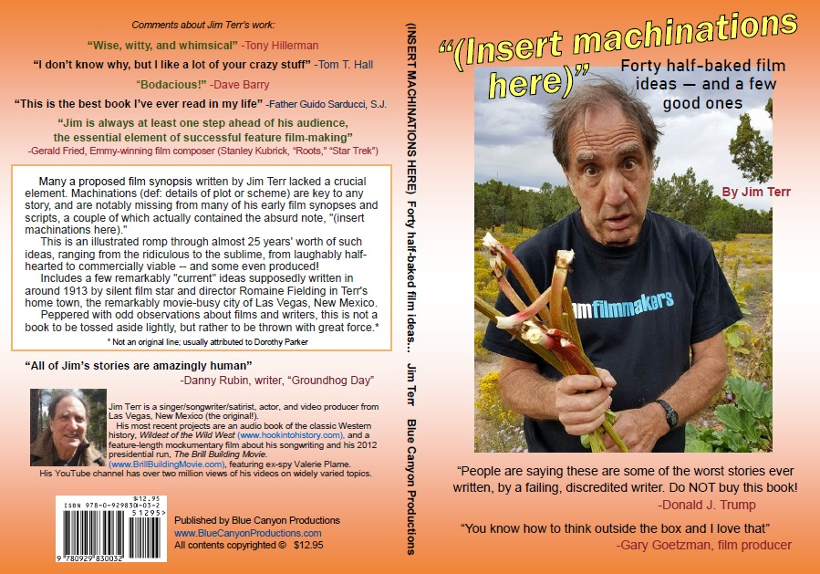
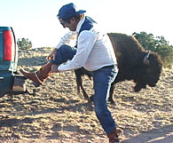
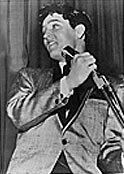
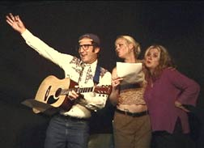

<!DOCTYPE html PUBLIC "-//W3C//DTD HTML 4.01 Transitional//EN">
<html>
<head>
     
  <meta http-equiv="Content-Type"
 content="text/html; charset=iso-8859-1">
     
  <meta name="Generator" content="Microsoft Word 97">
  <title>Blue Canyon Productions, website for highly-rated music, information
and humor</title>
         
  <meta name="Description"
 content="Website for music, information and humor with highly-rated CDs, books, videos and graphics produced by Jim Terr and Blue Canyon Productions of Santa Fe, New Mexico.">
     
  <meta name="Keywords"
 content="Santa Fe, music, comedy, CDs, books, videos, Jim Terr, Blue Canyon Productions, country music, Jewish humor, political satire, mp3, Dr. Laura Schlessinger, letters to the editor, essays, demagogue, holocaust, driving, auto safety, teenagers, reading, manufacturing, New Mexico driving, Slim Pickens, World War Two veterans, Tony Hillerman,  sleep paralysis, talk radio, George W. Bush, Father Guido Sarducci, Dave Barry, Jonathan Alter, Billboard Magazine, National Public Radio, NPR, BBC, Jim Bohannon, Hodding Carter, Lee Atwater, Gordon Liddy, Paul Harvey, Daniel Schorr, Jonathan Alter, Newsweek, Max Wieczorek, Head of Christ, Jesus, Christ, Jesus Christ">
  <style type="text/css">
  <!--
  .auto-style1 {
	  text-align: center;
  }
.auto-style2 {
	font-size: x-large;
}
.auto-style3 {
	font-size: medium;
}
.auto-style4 {
	font-size: large;
}
.auto-style5 {
	font-size: smaller;
}
.auto-style6 {
	font-size: larger;
}
.auto-style7 {
	font-family: Arial;
}
.auto-style9 {
	background-color: #FFFFFF;
}
.auto-style11 {
	margin-left: 80px;
}
.auto-style12 {
	font-size: xx-large;
}
.auto-style13 {
	color: #E82E2E;
}
.auto-style14 {
	font-family: Arial;
	font-size: larger;
}
-->
  </style>
</head>
  <body background="/etc/TAN.jpg" text="#000000" link="#0000cc"
 vlink="#0000cc" alink="#0000cc" style="font-family: Arial, Helvetica, sans-serif">
  <p align="center"><font face="Times"> </font><font face="Arial"><br>
      <span class="style62">Welcome to <b>BlueCanyonProductions.com</b>, the website for 
              various offerings <br>
of Jim Terr / Blue Canyon Productions 
              of New Mexico, USA. 
  </span></font></p>
  <p align="center"><span class="auto-style7"><em>Our founder (2024)</em><br>
  </span></p>
  <p align="center">&nbsp;</p>
  <p align="center">
  <br><em><strong>REDUCE THE STRESS WITH A LITTLE 
  COMEDY</strong></em><br><br>
  <br>
  Bumper sticker size 10&quot; x 3&quot;. Prices 
  below include free shipping in USA.&nbsp; Idea: Karin Franklin.
  </p>
  <form action="https://www.paypal.com/cgi-bin/webscr" method="post" target="_top">
	  <input type="hidden" name="on1" value="Quantity / price, shipping included">
<input type="hidden" name="currency_code" value="USD">
	  <input type="hidden" name="on2" value="Quantity / price, shipping included">
	  <div class="auto-style1">
<input type="hidden" name="cmd0" value="_s-xclick">
<input type="hidden" name="hosted_button_id0" value="3YYWHJAL9KGAW">
	  </div>
	  <div class="auto-style1">
		  <strong><em>
<input type="hidden" name="cmd1" value="_s-xclick">
<input type="hidden" name="hosted_button_id1" value="3YYWHJAL9KGAW">
		  </em></strong></div>
  <input type="hidden" name="cmd" value="_s-xclick" />
  <input type="hidden" name="hosted_button_id" value="3YYWHJAL9KGAW" />
  <table>
    <tr>
      <td class="auto-style1" style="width: 1091px">
        <input type="hidden" name="on0" value="Quantity / price, shipping included"/>
        Quantity / price, shipping included
      </td>
    </tr>
    <tr>
      <td class="auto-style1" style="width: 1091px">
        <select name="os0">
          <option value="Three stickers, shipped in US">
            Three stickers, shipped in US $7.00 USD
          </option>
          <option value="Five stickers, shipped in US">
            Five stickers, shipped in US $15.00 USD
          </option>
        </select>
      </td>
    </tr>
  </table>
  	<div class="auto-style1">
  <input type="hidden" name="currency_code" value="USD" />
  <input type="image" src="https://www.paypalobjects.com/en_US/i/btn/btn_buynowCC_LG.gif" border="0" name="submit" title="PayPal - The safer, easier way to pay online!" alt="Buy Now" />
	  </div>
  </form>
  <div class="auto-style1">
	  
		  </div>
	  </div>
  </form>
  </div>
  <p align="center">&nbsp;</p>
  <p align="center"><span class="auto-style13"><strong>
  <span class="auto-style12">&nbsp;</span></strong></span><font face="Arial"><span class="style62"><span class="auto-style13"><strong><span class="auto-style12">NOTICE</span></strong></span><br>
  <br>A few of my domain names that should forward to their proper websites<br>are not doing so lately, so for now please click below to get to 
  those websites. <br>I'm sorry for the inconvenience!</span></font></p>
  <p align="center" class="auto-style14"><a href="sherlock.html" target="_blank">sherlockinvegas.com</a> 
  (SHERLOCK IN VEGAS)</p>
  <p align="center" class="auto-style7">
  <a href="properties.html" target="_blank">nmfp-llc.com</a> (NEW MEXICO FILM 
  PROJECTS)</p>
  <p align="center" class="auto-style7">
  <a href="http://www.VulturesOfVegas.com">&quot;The Vultures of 
  Vegas&quot;</a><br></p>
  <p align="center" class="auto-style7">
  <a href="mailto:bluecanyon2@juno.com?subject=Contact from Blue Canyon Productions web page">
  <strong><em>Contact</em></strong></a></p>
  <p align="center" class="auto-style7">
  &nbsp;</p>
  <p align="center" class="style85">A little horn-tooting, if you don't mind:<br>
  <span class="auto-style6">Almost </span><strong><span class="auto-style6">
  THREE MILLION VIEWS</span></strong><span class="auto-style6"> on our main 
  </span> 
  <a href="https://www.youtube.com/user/hymiehymie" target="_blank">
  <span class="auto-style6">YouTube Channel</span></a>!</p>
  <p align="center" class="style85">Advertising <strong>jingles</strong>, 
  contracted&nbsp; and other music work:&nbsp;
  <a href="http://www.thesongwriter.us">TheSongwriter.us</a></p>
  <p align="center" class="style85">Audio book: &quot;Wildest of the Wild West&quot;:
  <a href="http://www.hookintohistory.com">HookIntoHistory.com</a></p>
  <p align="center" class="auto-style7">
  _________________________________</p>
  <p align="center" class="auto-style7"><br></p>
  <p align="center"><a href="http://www.TrumpExperts.com" target="_blank">
  <span class="auto-style6">CLICK HERE</span></a><span class="auto-style6"> for 
  the &quot;</span><strong><span class="auto-style6">TRUMP EXPERTS 
  SPEAK OUT&quot;</span></strong><span class="auto-style6"> project</span></p>
  <p align="center">Updated (2024) version of the 2000 Holocaust Survivors 
  project is
  <a href="https://youtu.be/hxTZvAp6NBU?si=_upNgsbjo1cJ62iW" target="_blank">
  here</a></p>
  <p align="center">&nbsp;</p>
  <p align="center"><font face="Arial"><span class="style62">
  <span class="auto-style3">Information on the SANTA FE SPY TOUR is </span>
  <a href="http://santafespytour.com"><span class="auto-style3">here</span></a>
  </span></font></p>
  <p align="center"><a href="http://www.nmfp-llc.com">New Mexico film projects</a></p>
  <p align="center">&nbsp;</p>
  <p align="center"><a href="https://brillbuildingmovie.com/" target="_blank">
  THE BRILL BUILDING MOVIE</a> </p>
  <p align="center" class="style85">A little horn-tooting, if you don't mind:<br>
  Over <strong>2.5 MILLION VIEWS</strong> on our main 
  <a href="https://www.youtube.com/user/hymiehymie" target="_blank">YouTube Channel</a>!</p>
  <p align="center" class="style85">Advertising <strong>jingles</strong>, 
  contracted&nbsp; and other music work:&nbsp;
  <a href="http://www.thesongwriter.us">TheSongwriter.us</a></p>
  <p align="center" class="style85">&nbsp;</p>
  <p align="center" class="style85"><span class="auto-style11"><strong>
  <span class="auto-style10">
  &quot;24-Track Chronicles&quot;</span><span class="auto-style9"> book&nbsp; </span>
  <a href="http://www.24trackchronicles.com" target="_blank">
  <span class="auto-style9">website here</span></a></strong></span>&nbsp;</p>
  <p align="center" class="auto-style7"><strong><span class="auto-style8">
  &quot;BEAUTIFUL LITTLE VEGAS&quot;</span> photo book&nbsp;
  <a href="https://bluecanyonproductions.com/beautiful_little_vegas.html" target="_blank">website here</a></strong></p>
  <p align="center"><br>
  </p>
  <form action="https://www.paypal.com/cgi-bin/webscr" method="post" target="_top">
<input type="hidden" name="hosted_button_id" value="3YYWHJAL9KGAW">
<input type="hidden" name="cmd" value="_s-xclick">
	  <input type="hidden" name="on0" value="Quantity / price, shipping included">
	  <table align="center" class="auto-style9" style="width: 500px">
		  <tr>
			  <td class="auto-style11" style="width: 529px"><br>&nbsp;from
			  <a href="http://www.Patreon.com/JimTerr" target="_blank">
			  www.Patreon.com/JimTerr</a><br>
			  <p style="margin: 0px; font-size: 14px; line-height: inherit; color: rgb(37, 37, 37); font-family: &quot;ABC Oracle Plus Variable&quot;, -apple-system, BlinkMacSystemFont, &quot;Segoe UI&quot;, Roboto, Arial, sans-serif; font-style: normal; font-variant-ligatures: normal; font-variant-caps: normal; font-weight: 325; letter-spacing: -0.14px; orphans: 2; text-align: start; text-indent: 0px; text-transform: none; widows: 2; word-spacing: 0px; -webkit-text-stroke-width: 0px; white-space: normal; background-color: rgb(255, 255, 255); text-decoration-thickness: initial; text-decoration-style: initial; text-decoration-color: initial;">
			  <em style="font-style: italic;">&quot;Jim Terr occupies a unique place 
			  in citizen activism. In both his brilliant satire work, and his 
			  more serious essays and outreach, he has a peculiar gift for 
			  focusing on the people who need to be reached and who might be 
			  reached, instead of just &#8220;preaching to the converted.&#8221;&nbsp; <br>&nbsp;&nbsp;&nbsp;&nbsp;&nbsp;&nbsp; 
			  &nbsp;&nbsp;His is a unique and valuable gift of populism and simplicity, 
			  perhaps a result of his small-town upbringing. His work is wise, 
			  hard-hitting, unusually effective, and deserves the support of 
			  everyone who wishes for a more humane world. Especially in these 
			  particularly divisive times, Jim has a gift for bridging the 
			  &#8220;divide.&#8221;&nbsp;&nbsp;&nbsp;&nbsp;&nbsp;&nbsp;&nbsp;&nbsp;&nbsp;&nbsp;&nbsp;&nbsp;&nbsp;&nbsp;&nbsp;&nbsp;&nbsp;&nbsp; 
			  &nbsp;&nbsp;--<span>&nbsp;</span></em><a href="https://en.wikipedia.org/wiki/Thom_Hartmann" style="background-color: transparent; text-decoration: none; cursor: pointer; color: var(--global-primary-action-default); font-weight: var(--global-fontWeights-body-bold);">THOM 
			  HARTMANN<span>&nbsp;</span></a><em style="font-style: italic;">, radio 
			  host and author</em></p>
			  <p style="margin: 0px; font-size: 14px; line-height: inherit; height: 1rem; color: rgb(37, 37, 37); font-family: &quot;ABC Oracle Plus Variable&quot;, -apple-system, BlinkMacSystemFont, &quot;Segoe UI&quot;, Roboto, Arial, sans-serif; font-style: normal; font-variant-ligatures: normal; font-variant-caps: normal; font-weight: 325; letter-spacing: -0.14px; orphans: 2; text-align: start; text-indent: 0px; text-transform: none; widows: 2; word-spacing: 0px; -webkit-text-stroke-width: 0px; white-space: normal; background-color: rgb(255, 255, 255); text-decoration-thickness: initial; text-decoration-style: initial; text-decoration-color: initial;">
			  </p>
			  <p style="margin: 0px; font-size: 14px; line-height: inherit; color: rgb(37, 37, 37); font-family: &quot;ABC Oracle Plus Variable&quot;, -apple-system, BlinkMacSystemFont, &quot;Segoe UI&quot;, Roboto, Arial, sans-serif; font-style: normal; font-variant-ligatures: normal; font-variant-caps: normal; font-weight: 325; letter-spacing: -0.14px; orphans: 2; text-align: start; text-indent: 0px; text-transform: none; widows: 2; word-spacing: 0px; -webkit-text-stroke-width: 0px; white-space: normal; background-color: rgb(255, 255, 255); text-decoration-thickness: initial; text-decoration-style: initial; text-decoration-color: initial;">
			  Jim Terr's spirit shows through consistently in the essays, songs, 
			  and other projects he creates. It's the droll, sardonic, 'cut the 
			  B.S.' outlook that is known around the world as 'American.' His 
			  tone is especially valuable in an election year.&quot;&nbsp;&nbsp;&nbsp;&nbsp;&nbsp;&nbsp;&nbsp;&nbsp;&nbsp;&nbsp;&nbsp;&nbsp;&nbsp;&nbsp;&nbsp;&nbsp;&nbsp;&nbsp; 
			  &nbsp;<span>&nbsp;</span><strong style="font-weight: var(--global-fontWeights-body-bold);">-</strong><a href="https://en.wikipedia.org/wiki/James_Fallows" style="background-color: transparent; text-decoration: none; cursor: pointer; color: var(--global-primary-action-default); font-weight: var(--global-fontWeights-body-bold);">JAMES 
			  FALLOWS</a><strong style="font-weight: var(--global-fontWeights-body-bold);">,<span>&nbsp;</span></strong>national 
			  correspondent, Atlantic Monthly</p>
			  <p style="margin: 0px; font-size: 14px; line-height: inherit; height: 1rem; color: rgb(37, 37, 37); font-family: &quot;ABC Oracle Plus Variable&quot;, -apple-system, BlinkMacSystemFont, &quot;Segoe UI&quot;, Roboto, Arial, sans-serif; font-style: normal; font-variant-ligatures: normal; font-variant-caps: normal; font-weight: 325; letter-spacing: -0.14px; orphans: 2; text-align: start; text-indent: 0px; text-transform: none; widows: 2; word-spacing: 0px; -webkit-text-stroke-width: 0px; white-space: normal; background-color: rgb(255, 255, 255); text-decoration-thickness: initial; text-decoration-style: initial; text-decoration-color: initial;">
			  </p>
			  <p style="margin: 0px; font-size: 14px; line-height: inherit; color: rgb(37, 37, 37); font-family: &quot;ABC Oracle Plus Variable&quot;, -apple-system, BlinkMacSystemFont, &quot;Segoe UI&quot;, Roboto, Arial, sans-serif; font-style: normal; font-variant-ligatures: normal; font-variant-caps: normal; font-weight: 325; letter-spacing: -0.14px; orphans: 2; text-align: start; text-indent: 0px; text-transform: none; widows: 2; word-spacing: 0px; -webkit-text-stroke-width: 0px; white-space: normal; background-color: rgb(255, 255, 255); text-decoration-thickness: initial; text-decoration-style: initial; text-decoration-color: initial;">
			  <em style="font-style: italic;">&quot;In his letters and articles, Jim 
			  Terr makes too much sense. In any other country he would have long 
			  since been locked up.&quot;&nbsp;&nbsp;&nbsp;&nbsp;&nbsp;&nbsp;&nbsp;&nbsp;&nbsp;&nbsp;&nbsp;&nbsp;&nbsp;&nbsp;&nbsp;&nbsp;&nbsp;&nbsp; 
			  &nbsp;</em><strong style="font-weight: var(--global-fontWeights-body-bold);"><em style="font-style: italic;">-</em></strong><a href="https://en.wikipedia.org/wiki/Jonathan_Alter" style="background-color: transparent; text-decoration: none; cursor: pointer; color: var(--global-primary-action-default); font-weight: var(--global-fontWeights-body-bold);">JONATHAN 
			  ALTER</a><strong style="font-weight: var(--global-fontWeights-body-bold);"><em style="font-style: italic;">,&nbsp;<span>&nbsp;</span></em></strong><em style="font-style: italic;">journalist 
			  / author / producer</em></p>
			  <p style="margin: 0px; font-size: 14px; line-height: inherit; height: 1rem; color: rgb(37, 37, 37); font-family: &quot;ABC Oracle Plus Variable&quot;, -apple-system, BlinkMacSystemFont, &quot;Segoe UI&quot;, Roboto, Arial, sans-serif; font-style: normal; font-variant-ligatures: normal; font-variant-caps: normal; font-weight: 325; letter-spacing: -0.14px; orphans: 2; text-align: start; text-indent: 0px; text-transform: none; widows: 2; word-spacing: 0px; -webkit-text-stroke-width: 0px; white-space: normal; background-color: rgb(255, 255, 255); text-decoration-thickness: initial; text-decoration-style: initial; text-decoration-color: initial;">
			  </p>
			  <p style="margin: 0px; font-size: 14px; line-height: inherit; color: rgb(37, 37, 37); font-family: &quot;ABC Oracle Plus Variable&quot;, -apple-system, BlinkMacSystemFont, &quot;Segoe UI&quot;, Roboto, Arial, sans-serif; font-style: normal; font-variant-ligatures: normal; font-variant-caps: normal; font-weight: 325; letter-spacing: -0.14px; orphans: 2; text-align: start; text-indent: 0px; text-transform: none; widows: 2; word-spacing: 0px; -webkit-text-stroke-width: 0px; white-space: normal; background-color: rgb(255, 255, 255); text-decoration-thickness: initial; text-decoration-style: initial; text-decoration-color: initial;">
			  I&#8217;ve known Jim for years, ever since he had me on his radio show 
			  in the charming little town of Las Vegas, NM. He&#8217;s a talented, 
			  caring guy with a great sense of humor and a good eye on what&#8217;s 
			  going on. We love publishing his selections of great articles in 
			  our &#8220;Editor&#8217;s Picks&#8221; feature.</p>
			  <p style="margin: 0px; font-size: 14px; line-height: inherit; color: rgb(37, 37, 37); font-family: &quot;ABC Oracle Plus Variable&quot;, -apple-system, BlinkMacSystemFont, &quot;Segoe UI&quot;, Roboto, Arial, sans-serif; font-style: normal; font-variant-ligatures: normal; font-variant-caps: normal; font-weight: 325; letter-spacing: -0.14px; orphans: 2; text-align: start; text-indent: 0px; text-transform: none; widows: 2; word-spacing: 0px; -webkit-text-stroke-width: 0px; white-space: normal; background-color: rgb(255, 255, 255); text-decoration-thickness: initial; text-decoration-style: initial; text-decoration-color: initial;">
			  <strong style="font-weight: var(--global-fontWeights-body-bold);">
			  -Russ Baker</strong>, Editor in Chief,<span>&nbsp;</span><a href="https://whywhatwhy.com/" style="background-color: transparent; text-decoration: none; cursor: pointer; color: var(--global-primary-action-default); font-weight: var(--global-fontWeights-body-bold);">WhoWhatWhy</a>, 
			  author and investigative journalist</p>
			  <p style="margin: 0px; font-size: 14px; line-height: inherit; height: 1rem; color: rgb(37, 37, 37); font-family: &quot;ABC Oracle Plus Variable&quot;, -apple-system, BlinkMacSystemFont, &quot;Segoe UI&quot;, Roboto, Arial, sans-serif; font-style: normal; font-variant-ligatures: normal; font-variant-caps: normal; font-weight: 325; letter-spacing: -0.14px; orphans: 2; text-align: start; text-indent: 0px; text-transform: none; widows: 2; word-spacing: 0px; -webkit-text-stroke-width: 0px; white-space: normal; background-color: rgb(255, 255, 255); text-decoration-thickness: initial; text-decoration-style: initial; text-decoration-color: initial;">
			  </p>
			  <p style="margin: 0px; font-size: 14px; line-height: inherit; color: rgb(37, 37, 37); font-family: &quot;ABC Oracle Plus Variable&quot;, -apple-system, BlinkMacSystemFont, &quot;Segoe UI&quot;, Roboto, Arial, sans-serif; font-style: normal; font-variant-ligatures: normal; font-variant-caps: normal; font-weight: 325; letter-spacing: -0.14px; orphans: 2; text-align: start; text-indent: 0px; text-transform: none; widows: 2; word-spacing: 0px; -webkit-text-stroke-width: 0px; white-space: normal; background-color: rgb(255, 255, 255); text-decoration-thickness: initial; text-decoration-style: initial; text-decoration-color: initial;">
			  &quot;The McCune Foundation has funded Jim Terr in seeral remarkably 
			  successful and useful educational video projects over the years, 
			  which have gained considerable national notice despite their low 
			  budgets&quot; -<strong style="font-weight: var(--global-fontWeights-body-bold);">Owen 
			  M. Lopez</strong>, Executive Director.</p>
			  <p style="margin: 0px; font-size: 14px; line-height: inherit; height: 1rem; color: rgb(37, 37, 37); font-family: &quot;ABC Oracle Plus Variable&quot;, -apple-system, BlinkMacSystemFont, &quot;Segoe UI&quot;, Roboto, Arial, sans-serif; font-style: normal; font-variant-ligatures: normal; font-variant-caps: normal; font-weight: 325; letter-spacing: -0.14px; orphans: 2; text-align: start; text-indent: 0px; text-transform: none; widows: 2; word-spacing: 0px; -webkit-text-stroke-width: 0px; white-space: normal; background-color: rgb(255, 255, 255); text-decoration-thickness: initial; text-decoration-style: initial; text-decoration-color: initial;">
			  </p>
			  <p style="margin: 0px; font-size: 14px; line-height: inherit; color: rgb(37, 37, 37); font-family: &quot;ABC Oracle Plus Variable&quot;, -apple-system, BlinkMacSystemFont, &quot;Segoe UI&quot;, Roboto, Arial, sans-serif; font-style: normal; font-variant-ligatures: normal; font-variant-caps: normal; font-weight: 325; letter-spacing: -0.14px; orphans: 2; text-align: start; text-indent: 0px; text-transform: none; widows: 2; word-spacing: 0px; -webkit-text-stroke-width: 0px; white-space: normal; background-color: rgb(255, 255, 255); text-decoration-thickness: initial; text-decoration-style: initial; text-decoration-color: initial;">
			  <em style="font-style: italic;">I&#8217;m totally proud and honored to 
			  support Jim Terr. &nbsp;His take on, expression of, and support for 
			  many good things is what our world needs today. &nbsp;We&#8217;ve got plenty 
			  of cogs in wheels but not much &nbsp;creative genius directed towards 
			  our society and its foibles. &nbsp;Yay Jim!</em><span>&nbsp;</span>-<strong style="font-weight: var(--global-fontWeights-body-bold);">Dr. 
			  Joseph Whiteman</strong>, Patreon supporter</p>
			  <p style="margin: 0px; font-size: 14px; line-height: inherit; height: 1rem; color: rgb(37, 37, 37); font-family: &quot;ABC Oracle Plus Variable&quot;, -apple-system, BlinkMacSystemFont, &quot;Segoe UI&quot;, Roboto, Arial, sans-serif; font-style: normal; font-variant-ligatures: normal; font-variant-caps: normal; font-weight: 325; letter-spacing: -0.14px; orphans: 2; text-align: start; text-indent: 0px; text-transform: none; widows: 2; word-spacing: 0px; -webkit-text-stroke-width: 0px; white-space: normal; background-color: rgb(255, 255, 255); text-decoration-thickness: initial; text-decoration-style: initial; text-decoration-color: initial;">
			  </p>
			  <p style="margin: 0px; font-size: 14px; line-height: inherit; color: rgb(37, 37, 37); font-family: &quot;ABC Oracle Plus Variable&quot;, -apple-system, BlinkMacSystemFont, &quot;Segoe UI&quot;, Roboto, Arial, sans-serif; font-style: normal; font-variant-ligatures: normal; font-variant-caps: normal; font-weight: 325; letter-spacing: -0.14px; orphans: 2; text-align: start; text-indent: 0px; text-transform: none; widows: 2; word-spacing: 0px; -webkit-text-stroke-width: 0px; white-space: normal; background-color: rgb(255, 255, 255); text-decoration-thickness: initial; text-decoration-style: initial; text-decoration-color: initial;">
			  <em style="font-style: italic;">I consider it my civic duty, so am 
			  happy of course remain one of your patrons. You are fighting the 
			  good fight. And in the case of the money I send your way, I feel 
			  like I am helping you to fight it.<span>&nbsp;</span></em>-<strong style="font-weight: var(--global-fontWeights-body-bold);">Robert 
			  Dorf</strong>, Patreon supporter</p>
			  <br></td>
		  </tr>
	  </table>
</form>
  <hr width="500">
  <p align="center" class="style85">&nbsp;</p>
  <p align="center" class="style85"><span class="auto-style5">Info on 
  projects mentioned in recent article:<strong><br></strong>(may not all be 
  current 4-7-24)</span></p>
  <p align="center" class="style85">
  <a href="Sweeney.html" target="_blank">Story of KFUN's role in World War Two</a>
  <br><br>&quot;<a href="hook.html" target="_blank">Wildest of the Wild West&quot; audio 
  book</a><br></p>
  <p align="center" class="style85">&quot;<a href="locally.html" target="_blank">Locally 
  Owned&quot; and Trez Gregory concert</a></p>
  <p align="center" class="style85">&nbsp;&quot;<a href="katiearcher/index.htm" target="_blank">The 
  Home of&nbsp; Katie Archer&quot; radio drama and screenplay</a></p>
  <p align="center" class="style85">&quot;<a href="teddy.html" target="_blank">Teddy 
  Roosevelt Slept Here</a>&quot; stage musical (not mentioned)<br></p>
  <p align="center" class="style85"><br><span class="auto-style2"><strong>
  For information&nbsp;related to this book, <br>click on image:</strong></span><br>
  <a href="http://bluecanyonproductions.com/insert.html" target="_blank">
  </a><br>
  <br>
  </p>
  <p align="center" class="style85">&nbsp;</p>
  <p align="center" class="style85">
  <br><br><strong><span class="auto-style1">AGAIN, NOTE - This site (info below) 
  is years old, not even good for cruising...<br><br></span>
  <span class="auto-style4">________________<br>________________</span></strong></p>
  <p align="center" class="style85"><br></p>
  <p align="center"><font face="Arial"><font face="Helvetica,Arial"><span class="style62">Info on the<b><span class="style77"> four media / documentary projects </span></b>pending completion funding:</span></font></font><br>
    <em>(three of these four are foundation-funded to current point) </em><br>
  </p>
  <p align="center"><font face="Arial"><font face="Helvetica,Arial"><b><span class="style72">1</span><span class="style71">. </span><span class="style72"><a href="http://bluecanyonproductions.com/songwriter.html#doc">&quot;JINGLING ALL THE WAY &quot; documentary</a> </span></b><i><b><br>
  <br>
  </b></i></font></font><a href="http://bluecanyonproductions.com/songwriter.html#doc"></a></p>
  <p align="center" class="style71">&nbsp;</p>
  <h1 align="center" class="style71">2. <a href="/garage.html">Feature film near completion: &quot;A CHICKEN IN EVERY GARAGE&quot;</a><br>
    <a href="/garage.html"></a></h1>
  <p align="center">&nbsp;</p>
  <div align="center">3. <a href="http://media.gfem.org/node/11350">LOCAL RADIO NEWS: The "how" and "why" of local radio news reporting</a>.<br>
    <a href="http://media.gfem.org/node/11350"></a><br>  
    <span class="style84">Note on this listing: Grantmakers in Film+Electronic Media (GFEM) has recently changed<br>
    its name to 
Media Impact Funders.&nbsp;<a href="http://mediaimpactfunders.org" target="_blank">http://mediaimpactfunders.org</a></span>  </div>
  <p align="center" class="style71">&nbsp;</p>
  <div align="center"><span class="style71">4. <a href="http://media.gfem.org/node/11387">THE HOME OF KATIE ARCHER - historical/contemporary radio drama</a><br>  
      <a href="http://media.gfem.org/node/11387"></a><br>
      <span class="style82">Note on this listing: Grantmakers in Film+Electronic Media (GFEM) has recently changed<br>
its name to 
  Media Impact Funders.&nbsp;<a href="http://mediaimpactfunders.org" target="_blank">http://mediaimpactfunders.org</a></span>  </span><br>
  </div>
  <p align="center" class="style79"><a href="http://bluecanyonvideo.com/">INFO / REVIEWS ON PREVIOUS DOCUMENTARIES</a> <span class="style73">(and see letter below)</span> </p>
  <p align="center"></p>
  <p align="center"><a href="mailto:bluecanyon2@juno.com?subject=Inquiry re 4 projects" class="style62">QUESTIONS? Please email </a></p>
  <p align="center"></p>
  <p align="center"><a href="https://www.gofundme.com/DonnieTrunkCD">https://www.gofundme.com/DonnieTrunkCD</a></p>
  <p align="center">&nbsp;</p>
  <p align="center">&nbsp; </p>
  <p align="center"><br>
      <br>
      <br>
      <br>
      </p>
  <p align="center">&nbsp;</p>
  <p align="center">&nbsp;</p>
  <p align="center">&nbsp;</p>
  <p align="center"><font face="Arial"><font face="Helvetica,Arial"><i><b>* * * * * * * </b></i></font></font></p>
  <p align="center">&nbsp;</p>
  <p align="center">&nbsp;</p>
  <p align="center"><font face="Arial"><font face="Helvetica,Arial"><i><b>* * * * * * * </b></i></font></font></p>
  <p align="center">&nbsp;</p>
  <p align="center">&nbsp;</p>
  <p align="center"><font face="Arial"><font face="Helvetica,Arial"><i><b><br>
  <br>
  </b></i><a href="http://www.blueanyonsatire.com"><font size="3">or go directly 
      to </font></a><font size="3"><a href="http://www.bluecanyonsatire.com">BlueCanyonSatire</a></font><font size="4"><a href="http://www.bluecanyonsatire.com"></a></font></font></font> <font face="Arial"><font size="3">for political satire.</font></font></p>
  <p align="center" class="style64"><a href="/NewCDsEtc.html" class="style62">CLICK for INFO AND ORDERING CDs and DVDs </a></p>
  <table width="633" align="center" bgcolor="#FFFF66">
    <tr>
      <td width="625"><div align="center"><font size="+2" face="Arial, Helvetica, sans-serif">There is a &quot;Blue Canyon Productions&quot; on Bronson Ave.<br>
        in Los Angeles, but this ain't it. I don't know their website..
      </font></div></td>
    </tr>
  </table>
  <div align="center"><br>
    <em>Other related activites &amp; areas:</em><br>
  <br>
  </div>
  <table width="561" border="1" align="center">
  <tr> 
    <td height="41" width="122" bgcolor="#CCFFFF"> 
      <div align="center"><b><font face="Arial, Helvetica, sans-serif"><a href="buddy.html">BuDDy</a></font></b></div>    </td>
    <td height="41" width="142" bgcolor="#FF9966"> 
      <div align="center"><b><font face="Arial, Helvetica, sans-serif"><a href="jingular/index.htm">Jingles 
        / Videos</a></font></b></div>    </td>
    <td height="41" width="88" bgcolor="#FF99FF"> 
      <div align="center"><b><font face="Arial, Helvetica, sans-serif"><a href="bcmusic/index.html">New 
        CD</a></font></b></div>    </td>
    <td height="41" bgcolor="#FFFFFF" width="149"> 
      <div align="center"><font face="Arial, Helvetica, sans-serif" size="3"><b><a href="entertainment.html">LIVE!! 
        Performance</a></b></font></div>    </td>
  </tr>
</table>
<div align="center">
  <p><font face="Helvetica,Arial"><i><font face="Times" color="BLUE" size="6"><font
 face="Arial, Helvetica, sans-serif" size="2" color="#000000"><i><font size="1">(UPDATED 
    December '06)</font><br>
    </i></font></font></i></font> <font face="Times" color="BLUE" size="6"><b>Blue 
    Canyon Productions <br>
    </b><font face="Arial, Helvetica, sans-serif" size="2" color="#000000"><i> 
    </i></font></font><font face="Helvetica,Arial"> <i><b><font color="GREEN">Small 
    company's products gain national attention and acclaim.</font></b></i><br>
    Music, books, videos and graphics to inform, amuse and inspire.</font></p>
  <p><font face="Arial"><font face="Arial, Helvetica, sans-serif"><i>Lots of 
    stuff on <a href="http://www.youtube.com/profile_videos?user=hymiehymie">YouTube</a> 
    lately!</i></font> </font></p>
  <p>&nbsp;</p>
  <table width="619" height="62" align="center" bordercolor="#CC0000" border="1">
    <tr bgcolor="#D3E296"> 
      <td height="58"> 
        <div align="center"><font color="#CC0000"><br>
          <font face="Verdana, Arial, Helvetica, sans-serif" size="3" color="#990000">See 
          the infamous <i>&quot;Santa Fe Stops&quot;</i> video -- and other glimpses 
          of the<br>
          most strangely beautiful city in the USA, at</font></font><font face="Verdana, Arial, Helvetica, sans-serif" size="3"> 
          <a href="http://www.SantaFeShorts.com">www.SantaFeShorts.com<br>
          <br>
          </a> </font></div>      </td>
    </tr>
  </table>
  <p><br>
</p>
</div>
<p align="center"><font size="3"
 face="Arial, Helvetica, sans-serif"><b><i><font color="#CC0033">"Santa Fe's &#8212;and 
  therefore the world's&#8212;strangest web site. <br>
  Fascinating sound clips and soul-nourishing content."</font> </i></b></font><br>
  <font size="2" face="Arial, Helvetica, sans-serif">- Bill Hutchison, <a href="http://anthologist.org/">Anthologist's 
  Cabinet</a> <br>
  </font></p>
<table width="465" height="55" border="0" align="center">
    <tbody>
     <tr>
      <td width="514">       
      <div align="center">              
      <table cellpadding="0" width="452" bgcolor="#ffcc00" border="1">
          <tbody>
            <tr height="76">
              
            <td width="476" height="76"> 
              <p align="center"><font color="#990000"
 face="Arial, Helvetica, sans-serif">This website is supported by sales of the 
                critically-acclaimed, life-saving, life-enriching <b>educational 
                DVD,<br>
                <em>"Five Frightfully Fine Videos."</em></b></font> <br>
                <font face="Arial, Helvetica, sans-serif">Please <a
 href="videos.html#driving">check it out</a>.</font></p>             </td>
            </tr>
        </tbody>              
      </table>
      </div>       </td>
    </tr>
  </tbody> 
</table>
   
<div align="center"><b><font color="#990000"
 face="Arial, Helvetica, sans-serif"><br>
    YOU         <i>WILL</i> DIE!</font> <font
 face="Arial, Helvetica, sans-serif"> This friend's <a href="dying.html">beautiful
       book</a> will tell you all about it. </font></b><br>
        <br>
        <br>
        <br>
         
<table width="514" height="66" bgcolor="#ffffff">
          <tbody>
     <tr>
            <td width="247" rowspan="2">       
      <p align="center"><font size="2">
       </font><font size="3" face="Arial, Helvetica, sans-serif"><strong><br>
                        <font color="#cc0000"><em><font size="2">"The Passion
                       of BuDDy" </font></em></font><font size="2"><br>
          jolts Hollywood &amp; USA! </font></strong></font><font
 face="Arial, Helvetica, sans-serif"><font size="2"><br>
          (<a href="buddy/index.html#passion">see video</a>) <br>
          <br>
          <br>
          </font></font><font size="2"
 face="Arial, Helvetica, sans-serif"><em>         </em></font><font
 color="#ffffff" face="Arial, Helvetica, sans-serif"><a
 href="chicken.html">
       </a><br>
          <font size="2"><strong><font color="#ff0000">NOW ON CD!!!</font></strong></font></font><font
 size="2" face="Arial, Helvetica, sans-serif"><br>
          <font color="#0000cc">(<a href="chicken.html">Click Here</a>)</font></font><font
 size="2" face="Arial, Helvetica, sans-serif"><em> </em></font></p>        </td>
            <td>&nbsp;</td>
            <td>       
      <div align="center">                <font
 face="Arial, Helvetica, sans-serif"><b><i>"Five             Frightfully Fine
Videos" <font color="#000000">DVD </font></i></b></font><br>
            </div>       </td>
            <td>&nbsp;</td>
          </tr>
          <tr>
            <td width="10">&nbsp;</td>
            <td width="232" bgcolor="#ffff00">       
      <div align="center"><font color="#ff0000" size="4"
 face="Arial, Helvetica, sans-serif"><strong>Save                   your child<br>
          from a life of misery!</strong></font>
       <br>
          <font size="1" face="Arial, Helvetica, sans-serif">(Linda Blair 
makeup         test for "The Exorcist" ) </font>         <map
 name="Map4">
      <area shape="rect" coords="57,299,174,325" href="videos.html">
      </map>
            </div>       </td>
            <td width="5">       
      <div align="center"></div>
       <br>       </td>
          </tr>
  </tbody> 
</table>
        <a name="wrongGuy"></a><br>
         
<table width="546" bgcolor="#ffffff">
          <tbody>
     
    <tr> 
      <td> 
        <div align="center"> 
          <p class="MsoNormal" style="text-align: center;" align="center"><i><font
 face="Arial" size="2"><span
 style="font-size: 10pt; font-style: italic; font-family: Arial;"><strong> </strong></span></font></i><font face="Arial" size="2"><span
 style="font-size: 10pt; font-family: Arial;"><br>
            <font color="#990099"><strong>Newly-streamed videos produced by Jim 
            Terr / Blue Canyon Productions<o:p></o:p></strong><o:p></o:p></font><o:p><br>
            </o:p></span></font><i><font face="Arial" size="2"><span
 style="font-size: 10pt; font-style: italic; font-family: Arial;"><strong><br>
            </strong></span><span
 style="font-style: italic; font-family: Arial;"><strong><font size="4">"The Wrong 
            Guy"<o:p></o:p></font></strong><font size="4"><o:p></o:p></font><o:p><br>
            </o:p></span></font></i><font face="Arial" size="2"><span
 style="font-size: 10pt; font-family: Arial;">(12 minutes; Rated PG)<o:p><br>
            <br>
            </o:p></span></font><font size="2"
 face="Arial, Helvetica, sans-serif"><a href="wrongG01.html"> </a></font><font face="Arial" size="2"><span
 style="font-size: 10pt; font-family: Arial;"><o:p> </o:p></span></font></p>
          <p class="MsoNormal" style="text-align: center;" align="center"><font
 face="Arial" size="2"><span
 style="font-size: 10pt; font-family: Arial;"><o:p></o:p>First Runner-Up, Best 
            Actress (Mary Evans), <a href="http://imdb.com/name/nm1350158/">Best 
            Editor</a> <o:p><br>
            </o:p>2001 <i><span style="font-style: italic;">Flicks on 66</span></i> 
            <i><span style="font-style: italic;">Film Festival</span></i>, Albuquerque<o:p><br>
            </o:p></span></font><span
 style="font-size: 10pt; font-family: Arial;"><o:p><strong><br>
            <a href="video/WrongGuy_2.wmv">DSL/Cable</a></strong><br>
            (Windows Media) </o:p></span><font face="Arial" size="2"><span
 style="font-size: 10pt; font-family: Arial;"><o:p></o:p></span></font><font face="Arial" size="2"><span
 style="font-size: 10pt; font-family: Arial;"><o:p></o:p></span></font></p>
          </div>
        <blockquote> 
          <div align="left"><font face="Arial" size="2"><span
 style="font-size: 10pt; font-family: Arial;"><o:p><font face="Arial, Helvetica, sans-serif" color="#990033">&quot;Jim 
            Terr, man of music, media and movies, manages to achieve, in <i>The 
            Wrong Guy,&quot; the essential element of successful feature film-making: 
            he is always at least one step ahead of his audience.&quot;</i></font></o:p><br>
            &nbsp;&nbsp;&nbsp;&nbsp;&nbsp;&nbsp;&nbsp;&nbsp;&nbsp;-<b>Gerald Fried</b>, 
            Oscar-nominated, Emmy-winning film composer <br>
            &nbsp;&nbsp;&nbsp;&nbsp;&nbsp;&nbsp;&nbsp;&nbsp;&nbsp;&nbsp;&nbsp;&nbsp;&nbsp;&nbsp;&nbsp;&nbsp;&nbsp;&nbsp;&nbsp;&nbsp;&nbsp; 
            &nbsp;&nbsp;&nbsp;&nbsp;&nbsp;&nbsp;&nbsp;&nbsp;&nbsp;&nbsp;&nbsp;&nbsp;&nbsp;&nbsp;&nbsp;&nbsp;&nbsp;(Stanley 
            Kubrick, <i>&quot;Roots&quot;</i>, etc.)</span></font><font face="Arial" size="2"><span
 style="font-size: 10pt; font-family: Arial;"><o:p></o:p></span></font><font face="Arial" size="2"><span
 style="font-size: 10pt; font-family: Arial;"><o:p> </o:p></span></font></div>
        </blockquote>
        <div align="center"> 
          <hr>
          <br>
          <table width="437" height="176" align="center" bgcolor="#FFCCFF">
            <tbody> 
            <tr> 
              <th width="429" height="118" scope="col"> 
                <div align="center"> </div>              </th>
            </tr>
            <tr> 
              <td height="50"> 
                <div align="center"><font
 face="Arial, Helvetica, sans-serif"><font color="#cc0000" size="2"> <font
 color="#000000"><br>
                  4-minute feature film trailer parody <br>
                  </font><em><strong><font color="#990066" size="3">"The Passion 
                  of BuDDy" </font></strong></em><br>
                  </font><font color="#cc0000" size="2"
 face="Arial, Helvetica, sans-serif"><span class="MsoNormal"><font
 face="Arial" size="2"><span
 style="font-size: 10pt; font-family: Arial;"><o:p> </o:p></span></font><font
 face="Arial" size="2"><span
 style="font-size: 10pt; font-family: Arial;">Featured in 2004 Santa Fe Film Festival<o:p></o:p></span></font></span><br>
                  <br>
                  Windows Media: <a
 href="video/Buddy_Your_Friend_56k.wmv">56k</a>  <a
 href="video/Buddy_Your_Friend_256k.wmv">DSL/Cable</a>  </font><font
 face="Arial, Helvetica, sans-serif"> <br>
                  <font color="#cc0000" size="2">Real Video:  <a
 href="ram_files/Buddy_Your_Friend_56k.ram">56k</a>  <a
 href="ram_files/Buddy_Your_Friend_256k.ram">DSL/Cable</a></font></font><font
 color="#cc0000" size="2"> <br>
                  <br>
                  </font></font></div>              </td>
            </tr>
            </tbody> 
          </table>
          <p class="MsoNormal" style="text-align: center;" align="center"><font
 face="Arial" size="2"><span
 style="font-size: 10pt; font-family: Arial;"><o:p></o:p></span></font><font
 face="Arial" size="2"><span
 style="font-size: 10pt; font-family: Arial;">Jim Terr documentaries at <a href="http://www.bluecanyonvideo.com/"
 title="http://www.bluecanyonvideo.com/" target="_blank">www.BlueCanyonVideo.com</a> 
                <o:p></o:p>
          </span></font></p>
          </div>      </td>
          </tr>
  </tbody> 
</table>
  <br>
</div>
   
<p align="center"><font
 face="Arial, Helvetica, sans-serif"><br>
  </font><br>
</p>
   
<div align="center"><br>
  <font color="#cc3300" size="4" face="Arial, Helvetica, sans-serif"><strong>ALL
 KINDS OF WILD  STUFF on <a href="satire.html">Satire Page</a><br>
  </strong></font>  
<table width="361">
    <tbody>
     <tr>
      <td width="173">       
      <div align="center"><b><font size="3"
 face="Arial, Helvetica, sans-serif"><i>
       </i></font></b></div>       </td>
      <td width="176">       
      <div align="center"><strong><font color="#cc3300">
       </font></strong></div>       </td>
    </tr>
  </tbody> 
</table>
  <a name="nekkid"></a><br>
   
<hr width="400" noshade> </div>
   
<div align="center">    
<p></p>
  </div>
  <br>
   
<div align="center">    
<table width="549" border="1" bgcolor="#ccffff">
      <tbody>
     <tr>
         <td width="539" height="275">        
      <blockquote>                     
        <p align="center"><strong><font color="#cc3300"><em><br>
              <font color="#ff0000">Sound and Video!</font></em></font> Buddy 
gets              "NEKKID" for a better world. <br>
              See </strong><a href="http://www.yourfriendbuddy.com">Buddy's 
Old Fashioned Web              Site</a><strong>.</strong></p>
                     
          <p align="center"><strong><a
 href="http://www.yourfriendbuddy.com"> </a><br>
            </strong></p>
          </blockquote>       </td>
      </tr>
  </tbody> 
</table>
    <br>
  </div>
   
<div align="center">  
<p><strong><font color="#339900" size="4"><em>Relax for a moment, on us . 
.      </em></font></strong>.<br>
<span class="style69"><font color="#cc0000">Gaze into a beautiful picture and 
     listen 
      to beautiful music . .</font></span> <font color="#cc0000"
 size="5">.</font>      (<a href="relax.html">Click here</a>) <br>
</p>
     
<p>&nbsp;</p>
<p><a href="onaccount.html"> </a><br>
    <br>
    <font face="Arial, Helvetica, sans-serif">&nbsp;&nbsp;&nbsp; 
    <br>
    <font size="4">*** <i>Star in your own <a href="http://www.hollywoodme.com">movie!</a></i>    </font><font size="4">***</font><br>
    &nbsp;&nbsp; 
    &nbsp;     </font><br>
  </p>
  </div>
 
<blockquote><table width="534" align="center">
   <tbody>
       <tr>
  <td>          
        <div align="center"><font size="+1"><b><i><font size="+2"><font
 size="+1"><font size="2" face="Arial, Helvetica, sans-serif">VISIT      
            OUR <a href="humor.html">HUMOR PAGE</a>: "<font
 color="#ff3300">Santa                    Fe Stops</font>" video tells you 
all you need to know                    about the decline of  western civilization 
-- or at least                    about Santa Fe, NM -- and <br>
   "A Simple  Way to Count Votes in Florida" tells you all you need to know 
about, <br>
   well, that subject. Rube Goldberg lives!</font></font></font></i></b></font></div>         </td>
       </tr>
    </tbody>   
  </table>
   <br>
     
  <table width="561" align="center">
  <tbody>
       <tr>
  <td height="68">          
        <div align="left"><font face="Arial"><font color="Red"><b><font
 color="#0033cc"><i><font color="#ff0000">  <font color="#cccccc"> <font
 size="4"> <a href="$298.html">"The $2.98 Video  Collection"</a></font></font> 
        <br>
  "Hilarious shorts. '$2.98' is so funny, you'll  have to replace your ass 
after laughing it off." </font></i></font></b><font color="#0033cc"><i><font
 color="#ff0000"><font color="#000000">-Santa  Fe Reporter </font></font></i></font></font></font></div>         </td>
       </tr>
    </tbody>   
  </table>
   <br>
      
  <table width="566" align="center">
  <tbody>
       <tr>
  <td>          
        <div align="center"><b><i><font color="#cc3300" size="4"
 face="Arial, Helvetica, sans-serif">STRANGE               - STRANGE - STRANGE</font></i><font
 size="4" face="Arial, Helvetica, sans-serif">  </font></b><font
 size="3" face="Arial, Helvetica, sans-serif">  <br>
                Jim            Terr sneak-previews<b> Stephen Soderbergh's</b> 
latest film, featuring            an unbelievable  all-star cast: <b>Susan 
Sarandon, Russell Crowe,            Julia Roberts, Annette Bening,  Martin 
Sheen, LeeLee Sobieski </b>and <b><br>
   Haley Joel Osment</b> (<a href="opinion.html">CLICK  HERE</a>)</font></div>         </td>
       </tr>
    </tbody>   
  </table>
   
  <hr align="center"> <br>
     
  <table width="91%" align="center" height="212">
   <tbody>
       <tr>
  <td colspan="2" height="74">          
        <p align="center"><font face="Arial, Helvetica, sans-serif"
 size="3"><b><font color="#cc0000"><i>May  we recommend that you visit "<a
 href="http://www.yourfriendbuddy.com">Buddy's Old Fashioned Web  Site</a>"&#8482; 
        <font size="2">(www.YourFriendBuddy.com) </font></i></font></b></font></p>         </td>
       </tr>
  <tr>
  <td width="49%">           
        <div align="center"><font size="2"
 face="Arial, Helvetica, sans-serif"><b> </b>  * No digital information - 
moving parts only. <br>
  * All sound &amp; video storage  on reliable <br>
  VHS and 8-track tapes. <br>
  * No plastic. <br>
  * Made in U.S.A.  <br>
  * Solar powered (methane backup). <br>
  * Uses recycled electrons. </font></div>        </td>
         <td width="51%">         </td>
      </tr>
    </tbody>   
  </table>
   
  <div align="center">    
  <table width="75%">
  <tbody>
       <tr>
  <td><font face="Arial, Helvetica, sans-serif" size="2" color="#cc0000"><i><font
 size="3">Hear  Buddy sing "</font></i></font><font size="3"><i><font
 face="Arial, Helvetica, sans-serif"><a href="satire.html">Susan's  Cranberry 
Sauce</a><font color="#cc0000">," a tribute to National Public  Radio's Susan 
Stamberg!</font></font></i></font></td>
       </tr>
    </tbody>   
  </table>
   <br>
  </div>
   
  <hr>  <br>
        
  <table width="580" bgcolor="#ffffff" border="1" align="center"
 height="238">
      <tbody>
       <tr>
         <td width="582">         
        <blockquote>                      
          <p><font face="Arial"><font
 face="Arial, Helvetica, sans-serif" size="3"> <b><font color="#cc0000">"Son 
             of a Rabbi Man" now available in</font></b></font><font
 face="Arial, Helvetica, sans-serif" size="2"><b><font color="#cc0000"> 
            <a href="satiremp3.html">MP3 broadcast version</a>!</font></b></font> 
             </font></p>
                       
          <p><font face="Arial"><font size="4"><i><font color="#ff6666"><b><font
 color="#3333ff">NEW!</font></b></font></i></font><font color="#3333ff"> 
            </font></font> <font size="3"> <b><font
 face="Arial, Helvetica, sans-serif">MODELS              SPEAK OUT! See our 
new <a href="humor.html">Humor Page</a>! </font></b></font></p>
                       
          <p><font face="Arial"><font color="Red"><b><font
 color="#0033cc"><i><font color="#ff0000" size="4">NEW!              </font></i><font
 color="#000000" size="3" face="Arial, Helvetica, sans-serif"><i><a
 href="cd.html">Our              first CD</a> wins kudos worldwide!</i></font><i><font
 color="#ff0000" size="3" face="Arial, Helvetica, sans-serif">           
  </font></i></font></b></font> </font></p>
                       
          <p><font face="Arial"><font size="4"
 face="Arial, Helvetica, sans-serif" color="#ff0033"><b><font
 color="#00cccc">NEWS              FLASH!</font></b></font><font
 color="#00cccc"> </font> <font size="3"
 face="Arial, Helvetica, sans-serif">NBC-TV              <i>"Dateline" </i>story 
on <b>Sleep Paralysis</b> (8-16-00) rekindles              interest in our 
authoritative video on the subject. <a href="mystery.html"><font
 size="2">Click              here</font></a><font size="2">. </font></font></font></p>
          </blockquote>  </td>
      </tr>
    </tbody>   
  </table>
   <br>
      
  <table width="83%" bgcolor="#ffffff" border="1" align="center">
  <tbody>
       <tr>
  <td><b><u><i><font face="Arial, Helvetica, sans-serif" size="3">Editor's 
 Note</font></i></u></b><font face="Arial, Helvetica, sans-serif"
 size="3"><i>:     In reviewing our websites, perhaps the most enduringly 
powerful thing we have  to offer are the interview excerpts with Tony Hillerman 
and Dr. Sabine Ulibarri  from our <a
 href="http://bluecanyonproductions.com/ww2.html">World War Two Veterans 
       </a>'  video. Also, our <a href="holo.html">Holocaust Survivors</a> 
video was recently featured and honored  at the Portland (OR) Longbaugh II 
Film Festival! </i></font></td>
  </tr>
    </tbody>   
  </table>
    <a name="about"></a><br>
    <br>
    <font face="Arial">    
  <table>
      <tbody>
       <tr>
         
      <td width="321" height="384"> 
        <p align="center"><font face="Georgia, Times New Roman, Times, serif" color="#CC0066">To 
          go directly to <b><a href="http://www.JimTerr.com">JimTerr.com</a></b><a href="http://www.JimTerr.com"> 
          <i>click</i></a></font></p>
        <p><b>About Blue Canyon Productions:</b> <br>
          A<font
 size="3" face="Arial, Helvetica, sans-serif"> vehicle for various entertainment 
          and media projects produced by Jim Terr. Terr is a New Mexico native 
          who is an occasional commentator in local and national media, a singer-songwriter, 
          video producer and author.</font></p>
                   
        <p><font size="2" face="Arial, Helvetica, sans-serif" color="#6633CC">"In 
          his letters and articles, Jim Terr makes too much sense. In any other 
          country he would have long since been locked up." </font><font size="2" face="Arial, Helvetica, sans-serif"><i><br>
          &nbsp; &nbsp;&nbsp;&nbsp;&nbsp;- <b><a href="http://www.jonathanalter.com"><font size="3">Jonathan 
          Alter</font></a>, <br>
          &nbsp;&nbsp;&nbsp;&nbsp;&nbsp;&nbsp;&nbsp;&nbsp;&nbsp;&nbsp; Senior 
          Editor, Newsweek</b></i></font></p>
                   
        <p><font face="Arial, Helvetica, sans-serif" size="2" color="#009933">"Jim 
          Terr's spirit shows through consistently in the essays, songs and other 
          projects he creates. It's the droll, sardonic, 'cut the B.S.' outlook 
          that is known around the world as 'American.' His tone is especially 
          valuable in an election year."</font><font face="Arial, Helvetica, sans-serif" size="2"><br>
          &nbsp;&nbsp;&nbsp;&nbsp;&nbsp;&nbsp; </font><font face="Arial, Helvetica, sans-serif" size="2"><i>- 
          <b><a href="http://www.jamesfallows.com"><font size="3">James Fallows</font></a></b></i></font></p>
        <p><font face="Arial, Helvetica, sans-serif" size="2"><b>Hear Jim Terr 
          interview with ARIANNA HUFFINGTON: <a href="Audio/AriannaFullEdited.mp3">FULL 
          INTERVIEW</a> RE HER BOOK, <i>&quot;<a href="http://www.amazon.com/Becoming-Fearless-Love-Work-Life/dp/0316166812">ON 
          BECOMING FEARLESS</a></i>&quot; ( 6 min., MP3)<br>
          </b></font></p>        </td>
        
      <td width="268"> 
        <p align="center"><font size="1">(Photo by <font face="Arial">Judy Lipsett</font>)</font> 
          <br>
           <br>
        <table width="70%" align="center">
            <tbody>
             <tr>
               
            <td height="87"> 
              <div align="left"> 
                <p align="center"><font size="1"><b><font size="2"> JIM TERR</font></b></font><font
 size="2"><b>:</b></font> <font size="2"><br>
                  "A gentle agitator...who's come up with a way to lower the country's 
                  political temperature." <i>  <br>
                  -Paul Greenberg, <br>
                  syndicated columnist</i></font></p>
              </div>               </td>
            </tr>
          </tbody>         
        </table>
         
        <p align="center"><font size="2" face="Arial, Helvetica, sans-serif"><em><font color="#0000FF">(These 
          quotes do not indicate support <br>
          of any or all Jim Terr projects <br>
          or pronouncements)</font></em></font></p>         </td>
        
      <td width="268"> 
        <table width="229" border="0" bgcolor="#ffcc66">
          <tbody> 
          <tr> 
            <td width="223" height="96"> 
              <p align="center"><font size="2"><strong><font
 face="Arial, Helvetica, sans-serif"><br>
                <a href="http://www.bluecanyonmusic.com/"><font size="3">Information</font></a> 
                <font size="3">on the new CD,</font></font></strong></font><font face="Arial, Helvetica, sans-serif" size="3"><br>
                <font color="#cc0000"><strong><em>"Please Cut My Song, Mr. Travis"</em></strong></font><strong> 
                by Jim Terr and friends</strong> </font><br>
              </p>            </td>
          </tr>
          </tbody> 
        </table>
        <blockquote>
          <div align="left"> 
            <p align="center"> <a href="http://www.bluecanyonproductions.com/pix.html#DC"><b>SEE 
              PHOTOS of Washington DC</b></a> <br>
              mentioned in <br>
              October 2006 <a href="http://www.bluecanyonproductions.com/opinion.html">essay</a></p>
            <p><br>
              <font face="Arial, Helvetica, sans-serif" color="#CC0000">&quot;Jim 
              Terr&#8217;s creativity and versatility are unmatched. Well, <i>almost</i> 
              unmatched.&quot;</font><font face="Arial, Helvetica, sans-serif"><br>
              &nbsp;&nbsp;&nbsp;&nbsp;&nbsp;&nbsp;&nbsp;&nbsp; - <b><a href="http://www.unc.edu/depts/pubpol/cater_bio.html">Hodding 
              Carter</a></b></font><a href="http://www.unc.edu/depts/pubpol/cater_bio.html"><br>
              </a><br>
              <br>
              "Absolutely brilliant website. This guy does some of the best satire 
              in the business. One of the great comedic and auditory geniuses 
              of our day." <b><br>
              &nbsp;&nbsp;&nbsp;&nbsp; - <a href="http://www.thomhartmann.com">Thom 
              Hartmann </a><br>
              </b><br>
              <br>
            </p>
          </div>
        </blockquote>      </td>
      </tr>
    </tbody>   
  </table>
    </font>       
  <div align="center">
    <p><font face="Arial"><br>
      </font></p>
    <p><font face="Arial"><font color="#ff3300"><strong>A few old Jim Terr <a
 href="opinion2/index.html">commentaries</a>.</strong></font></font></p>
  </div>
  </blockquote>
   
<blockquote>   
  <table border="3" bordercolor="BLACK">
   <tbody>
       <tr bgcolor="white">
         <td height="328">                   
        <div align="center">            <b><font face="Arial, Helvetica, sans-serif" size="3"><br>
            MY  FAITH</font></b> <br>
            <font size="3" face="Arial, Helvetica, sans-serif">by Jim  Terr </font><br>
            <font size="2" face="Arial, Helvetica, sans-serif"><br>
  <i>(Published  in "Prime Time" seniors newspaper, March, 2000)</i></font></div>
         
        <blockquote>
          <p><font size="3" face="Arial, Helvetica, sans-serif">To  me, faith 
            in God, belief in a higher power or intelligence, is not a matter of  faith 
            at all. </font></p>
          <p><font size="3" face="Arial, Helvetica, sans-serif">Rather,  it&#8217;s 
            a matter of logic. It&#8217;s so obvious that virtually every aspect of the natural 
            world (and I&#8217;m including in that the &#8220;spiritual&#8221; world) is so much more complex,
            so much more intricately designed than we will ever understand, that it
            seems  obvious that humans and human consciousness are just a speck in a
            much vaster  system.</font></p>
          <p><font size="3" face="Arial, Helvetica, sans-serif">Even if  you 
            consider &#8220;evolution&#8221; to be the explanation for some of life&#8217;s intricacies, 
            the natural processes utilized by evolution are so complex and wondrous as
            to  similarly escape anything near full human comprehension. </font></p>
          <p align="center"><font size="3"
 face="Arial, Helvetica, sans-serif">(continued  on <a
 href="opinion.html">Opinion Page</a>)</font></p>
        </blockquote></td>
      </tr>
    </tbody>   
  </table>
   <br>
   <br>
     <br>
        
  <table width="82%" align="center">
   <tbody>
       <tr>
  <td>          
        <p align="center"><font color="#663300"><i><font color="#000000"
 size="2" face="Arial, Helvetica, sans-serif">"A  day without an update or 
recommendation from Jim Terr is like a day without sunshine,  a night without 
stars, a party without guests, a pond without frogs, a dog without  fleas, 
a deer without ticks." </font></i></font></p>
         
        <p align="center"><font color="#000000" size="2"
 face="Arial, Helvetica, sans-serif"><i>-Gershon Siegel, publisher, <a href="http://eldoradosun.com/">Sun 
          Monthly</a> (Santa Fe)</i></font></p>         </td>
       </tr>
    </tbody>   
  </table>
    <br>
       
  <table width="547" border="0" align="center">
      <tbody>
       <tr>
        <td width="541">         
        <p><strong><font color="#cc0000" size="6"
 face="Arial, Helvetica, sans-serif">**</font></strong><font size="3"
 face="Arial, Helvetica, sans-serif"> <strong><em><u>Songs               
   from the CD, "Please Cut My Song, Mister Travis</u></em></strong><em>" 
        <font size="2">(above)</font></em></font></p>
                   
        <p><font size="2" face="Arial, Helvetica, sans-serif">1.<strong> Please
Cut My Song, Mr. Travis </strong><br>
          2<strong>. This Changes Everything </strong>(Singer: Kathy Chiavola)</font><br>
          <font size="2" face="Arial, Helvetica, sans-serif">3.<strong> Some 
Guy in Kansas City</strong> </font><br>
          <font size="2" face="Arial, Helvetica, sans-serif">4.<strong> Bringin' 
the Honky-Tonk</strong> <strong>Home</strong> </font><br>
          <font size="2" face="Arial, Helvetica, sans-serif">5.<strong>  I
               Just Wanna Know What It Would be Like to Kiss You</strong> 
(Talia         Willis)</font><br>
          <font size="2" face="Arial, Helvetica, sans-serif">6.<strong> Excuse 
Me While I Have the Blues</strong> (Don Armstrong)</font><br>
          <font size="2" face="Arial, Helvetica, sans-serif">7.<strong> Three-Teared 
Wedding Cake</strong> (Margaret Burke)</font><br>
          <font size="2" face="Arial, Helvetica, sans-serif">8.<strong> They</strong> 
        <strong>Never Met Anybody Like You and Me</strong> (with         Busy
McCarroll)</font><br>
          <font size="2" face="Arial, Helvetica, sans-serif">9.<strong> All 
It Takes</strong> (Lilia) </font><br>
          <font size="2" face="Arial, Helvetica, sans-serif">10.<strong>
You Ain't Got Much</strong> </font><br>
          <font size="2" face="Arial, Helvetica, sans-serif">11.<strong>
I Love a Man</strong> (Victoria Armstrong)</font><br>
          <font size="2" face="Arial, Helvetica, sans-serif">12.<strong>
Tonsils in Taiwan</strong>  </font><br>
          <font size="2" face="Arial, Helvetica, sans-serif">13.<strong>
Holding You Would Hold Me </strong></font><br>
          <font size="2" face="Arial, Helvetica, sans-serif">14.<strong>
Do They Have E-Mail In Heaven?</strong> </font><br>
          <font size="2" face="Arial, Helvetica, sans-serif">15.<strong>
Dancing to the Radio </strong>(with Mary Evans)</font><br>
          <font size="2" face="Arial, Helvetica, sans-serif">16.<strong>
She Taught Me How to Sing These Songs </strong>(Jim with         Rock Watson)        </font><br>
          <font size="2" face="Arial, Helvetica, sans-serif">17.<strong>
Rustle Up Some Love</strong> (Gwen Lenore and BuDDy)</font><br>
          <br>
          </p>        </td>
      </tr>
    </tbody>   
  </table>
  </blockquote>
 <font face="Arial">  </font> 
<center>  
<p><font face="Arial"><font size="3"><font size="2"><font size="3"><font
 size="2"><a href="products.html">Products</a>    <a href="public.html">Public 
 Service</a>  <a href="opinion.html">Opinion</a>   <br>
   <a href="humor.html">Humor</a>    <a href="satire.html">Satire  Songs</a> 
  <a href="other.html">Other Services</a>    <a href="links.html">Links</a>    </font><font
 face="Arial"><font face="Arial"><font face="Calisto MT"><font
 face="Arial"><font face="Arial"><font face="Helvetica,Arial"><font
 face="Arial"><font face="Calisto MT"><font face="Arial"><font size="2"><font
 face="Calisto MT"><font face="Arial"><font face="Arial"><font size="3"><font
 face="Arial, Helvetica, sans-serif" size="2"><a
 href="mailto:info@bluecanyonproductions.com?subject=inquiry%20from%20BCP.com">Contact
 Us</a></font></font></font></font></font></font></font></font></font></font></font></font></font></font></font></font></font> 
 </font></font><font size="2" face="Arial"><br>
 </font></p>
     
<p>&nbsp;</p>
  </center>
   <br>
 <br>
 <table width="564" border="1" align="center" bgcolor="#FFFFFF">
   <tr>
     <td width="554"><blockquote>
         <p>&nbsp;</p>
       <p><span class="style135"><strong>Public service  message for &ldquo;free lance creatives&rdquo;</strong></span><br>
             <br>
             <span class="style135">When submitting a public service message idea to the New Mexico Department of  Transportation, please follow these simple guidelines: DON&rsquo;T DO IT!!!<br>
             <br>
               Take it from me, a guy with a fairly good public record of creative work  (including the VERY long-running &ldquo;Toss No Mas&rdquo; jingle. &nbsp;I submitted an idea which arguably, years  later, resulted in the popular NMDOT &ldquo;Don&rsquo;t Text&rdquo; video,&nbsp; &ldquo;DNTXT:  Deadly Conversation&rdquo;.&nbsp; (<a href="https://www.youtube.com/watch?v=uwta1bxyLGw">https://www.youtube.com/watch?v=uwta1bxyLGw</a> )&nbsp; </span></p>
       <p class="style135">When  I made the Department aware of my earlier submission, and gently suggested they  pay me what I had requested as a creative fee in the first place, they politely  declined, based on technicalities**, while not actually denying that my idea  may have likely resulted in the current campaign. <br>
             <br>
         This is the highly principled, morality-in-government, &ldquo;do the right thing&rdquo; Martinez  administration, by the way. So, until further notice, and until they decide to  do the right thing, my suggested guideline for&nbsp;  submitting ideas remains: DON&rsquo;T DO IT!<br>
         <br>
         &nbsp;&nbsp;&nbsp;&nbsp;&nbsp;&nbsp;&nbsp; - Jim Terr 2014&nbsp; / email bluecanyon2 &ndash; at &ndash; juno &ndash; dot &ndash; com </p>
       <p class="style135">**  and asking ME &ndash; legal expert that I am not &ndash; if I can let them know of any  statutes contradicting the technicality they cited!! </p>
       <p>&nbsp;</p>
     </blockquote></td>
   </tr>
 </table>
  </body>
</html>


